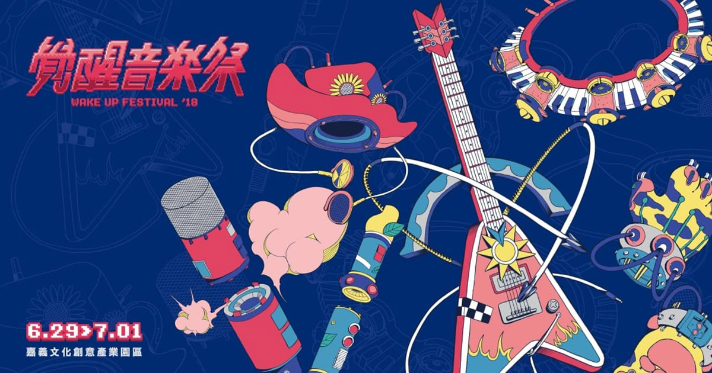
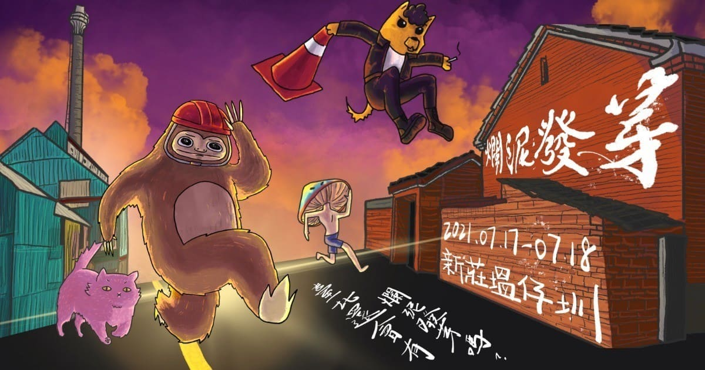
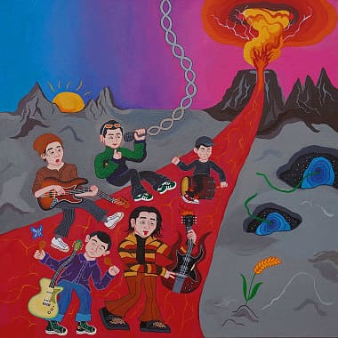
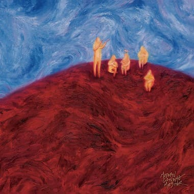
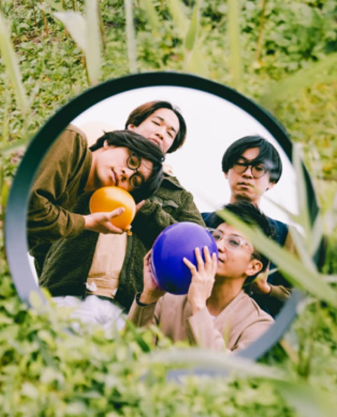
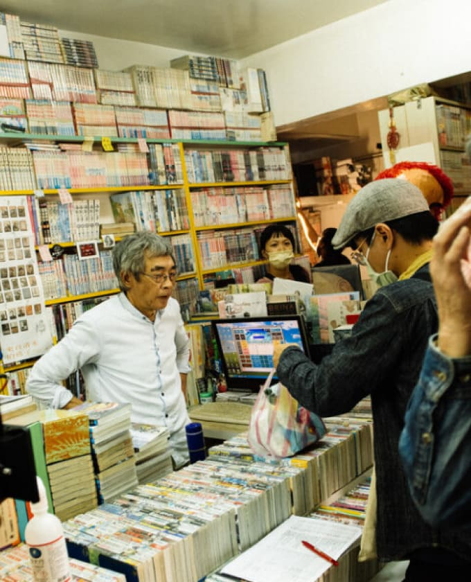

最新消息
歌曲排行
歌單撥放
樂團介紹
演出資訊
加入會員


精選推薦
非人物種
珍饈
朝夕之間
阿丹玩球球
陪我去走走
浪漫
餵飽豬
大悲懺
完全沒有畫面2.0

露波合唱團
有沒有很頭痛
蟲洞糖
拍謝少年
歹勢好勢
出巡

當代電影大師
告訴我他們都在
本來的什麼地方
年輕民謠
媒體專訪

營造一個沒有人煙的地方：
Deca Joins談《鳥鳥鳥》
吼腔、和風、原民合唱，一
幅無法定義的拼貼搖滾：珂
拉琪

租書店裡的政治犯與流亡者
——拍謝少年談〈時代看顧
正義的人〉
guitar